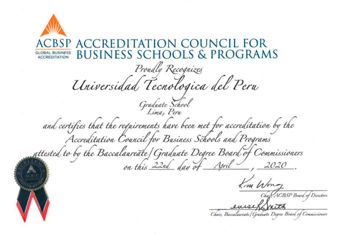

Juntos logramos
la Acreditación
ACBSP
Accreditation Council For Business Schools and Programs
ACBSP es una Acreditadora Internacional de Estados Unidos que garantiza la calidad académica de Escuelas y Programas de Negocios. Esta se destaca por promover la mejora continua de los procesos y reconocer la excelencia en la enseñanza en los programas de negocios en todo el mundo.
Estándares que evalúa
ACBSP
Los estándares ACBSP se elaboran sobre conceptos y valores que son la base del desarrollo para un Excelente Desempeño en la Educación. Estos estándares presentan prácticas que se pueden utilizar para evaluar, planificar, medir y mejorar continuamente los resultados de los programas de negocios.
-
Liderazgo
Cumplimiento de la institución y facultad en la creación y apoyo de valores, enfoque en el estudiante y sistema de liderazgo que promueva la excelencia en el desempeño.
-
Planeamiento Estratégico
Plan estratégico para dirigir al estudiante y lograr que se cumplan con los requerimientos del programa.
-
Enfoque de Estudiantes y Grupos de Interés
Cumplimiento de las propuestas y las expectativas que tienen los estudiantes y aspirantes, mediante un sistema de medición de satisfacción.
-
Medición y Análisis del Desempeño y Aprendizaje del Estudiante
Evaluación interna del desempeño, que permita el mejoramiento continuo del programa.
-
Enfoque en Docentes y Colaboradores
Capacidad de cumplimiento de la misión y objetivos, de acuerdo con el desempeño de la facultad y la administración.
-
Gestión del Proceso de Negocios y Educación
Innovación en el programa, mediante un currículo flexible y acorde con las demandas académicas actuales.
Beneficios de la
Acreditación
-

Validar nuestro Compromiso en brindar una Educación Superior de Calidad sustentada en la Mejora Continua e Innovación.
-
Mejorar la Empleabilidad de nuestros estudiantes y egresados
-
Reconocer la Calidad de la Maestría en Administración y Empresas (MBA) de la Escuela de Postgrado UTP a nivel nacional e internacional.
-
Facilitar la participación de nuestros estudiantes y docentes en Intercambios de universidades de la red ACBSP.
-

Ofrecer una Educación con Altos Estándares Internacionales de Calidad que convierta a nuestros estudiantes en Agentes de Cambio
-
Fortalecer los Procesos Organizacionales enfocados en las necesidades de nuestros estudiantes.
-
Garantizar el desarrrollo de habilidades y actitudes gerenciales personales e interpersonales de nuestros egresados para la Toma Estratégica de Decisiones en el entorno actual.
-
Acceder a la Red Internacional de Universidades acreditadas en todo el mundo para compartir las mejores prácticas.
¿Cómo Contribuyes
a la Acreditación?
Conociendo los objetivos de la Acreditación y participando en las actividades que convoca EPGUTP e involucrandote en el proceso de Acreditación ACBSP.
-

Estudiantes y Egresados
-
Colaboradores
-
Docentes
-
Empleadores
Blog ACBSP
Ver másNuestro objetivo es poner todas las herramientas que necesitas para transformar tu carrera al alcance de tus manos.
-

Es hora de Acreditarnos
Soy Liliana Alvarado, Directora de la Escuela de Postgrado de la UTP. Aún recuerdo claramente cuando llegue hace 4 años y medio a la EPG, encontre un lindo edificio, aulas súper equipadas, un grupo empresarial de respaldo muy importante, un equipo gerencial...
Leer más -
Alcanzar una Estrella
Leer más -

¡Vamos por la acreditación!
Leer más